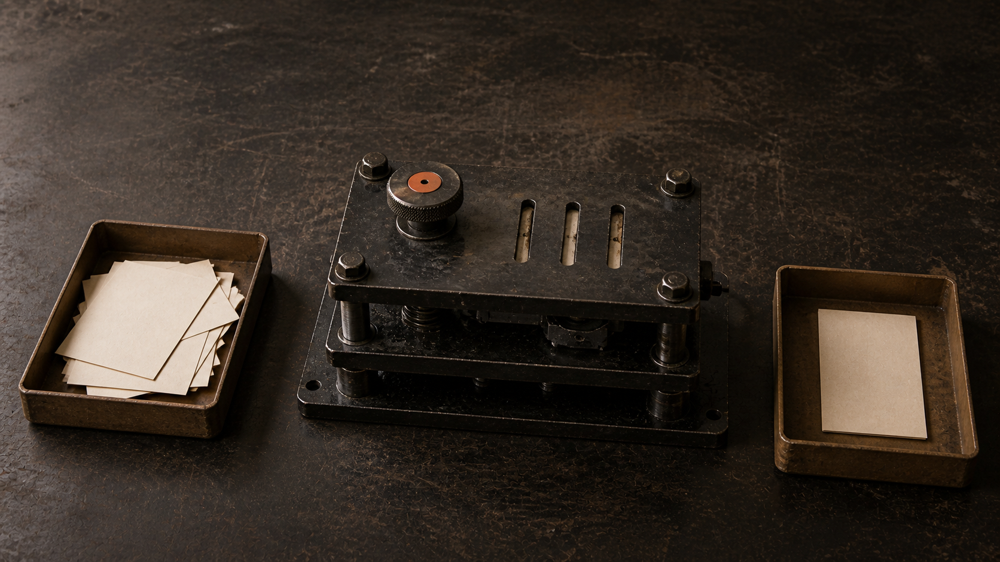

React builds the pieces
Next.js builds the application around them.
A React framework for full-stack web applications.
What the press adds
Files become routes
Work runs on the server or in the browser
Build tools and web optimizations come configured
Input
React components
Interface pieces: navigation, cards, forms, buttons.
Next.js
Routes · rendering · tooling
Output
A working web application
Pages, server endpoints, interactive UI, and production output.